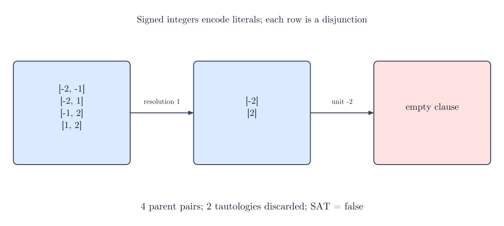
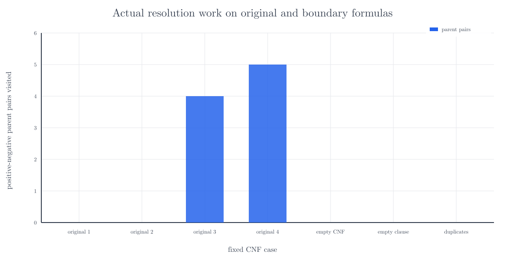
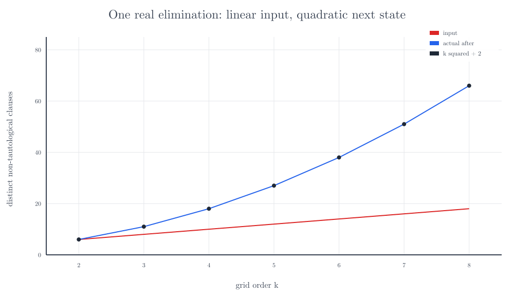
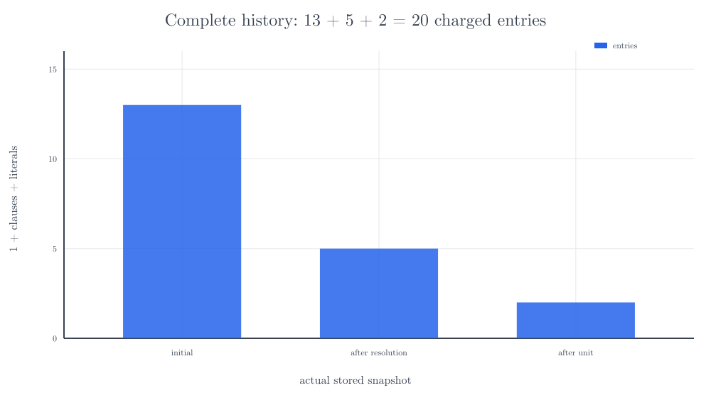

Davis–Putnam: Actual Resolution, Clause Growth and Checked SAT Verdicts
Abstract
A propositional formula in conjunctive normal form asks whether some Boolean assignment satisfies every clause. Enumerating all assignments is expensive, and removing a variable can create many new constraints. Davis–Putnam instead eliminates variables using forced literals, pure literals and resolution. We begin with a two-variable contradiction whose four parent pairs produce two opposite unit clauses and two discarded tautologies. Complete native traces expose the actual formulas and counters, retain the original four examples, and demonstrate a constructed quadratic clause-growth step. Independent truth tables check small inputs and the existential meaning of every transition. Complete validation and explicit resource limits distinguish an exact verdict from a request that exceeds available work or history.
Four parent pairs, two unit clauses, one contradiction
Let x=x₁ and y=x₂. The conjunction of all four possible two-literal clauses on these variables is false under every assignment. Eliminating x pairs each positive parent with each negative parent. Two unions contain both y and its negation and are always true, so they add no constraint. The other two are the opposite units {y} and {¬y}. Propagating either unit empties the other. The diagram and table below are built from the actual core history; no solver stages are reconstructed by the report.
#include <dm/dm.hpp>
int main() {
std::filesystem::create_directories("build");
const auto t=dm::algorithms::davis_putnam_trace(2,{{1,2},{1,-2},{-1,2},{-1,-2}});
if(t.satisfiable || t.steps.size()!=2 || t.work.resolution_pairs!=4) return 1;
std::vector<std::vector<std::vector<int>>> states{t.initial};
for(const auto& s:t.steps) states.push_back(s.after);
dm::graphics::Diagram d(75,1100);dm::graphics::DiagramNodeStyle box;box.width=3.5;box.height=3.1;box.font_size=21;box.fill={219,234,254};
const std::vector<std::string> rules{"unit","pure","resolution"};
std::print("| stage | actual signed literal clauses | rule just used | pivot/literal | pairs | tautologies discarded |\n| ---: | :--- | :--- | ---: | ---: | ---: |\n");
for(std::size_t k=0;k<states.size();++k) {
std::string label;for(const auto& c:states[k]) label+=c.empty()?"empty clause\n":std::format("{}\n",c);
if(k==2)box.fill={254,226,226};
d.node(std::to_string(k),{5.4*k,0},label,box);
if(k==0) std::print("| 0 | {} | initial | 0 | 0 | 0 |\n",states[k]);
else {const auto& s=t.steps[k-1];const auto rule=rules[static_cast<std::size_t>(s.rule)];
d.edge(std::to_string(k-1),std::to_string(k),std::format("{} {}",rule,s.literal));
std::print("| {} | {} | {} | {} | {} | {} |\n",k,states[k],rule,s.literal,s.pairs,s.tautologies);
}
}
d.text({5.4,2.8},"Signed integers encode literals; each row is a disjunction",21)
.text({5.4,-2.8},std::format("{} parent pairs; {} tautologies discarded; SAT = {}",t.work.resolution_pairs,t.work.tautological_resolvents,t.satisfiable),22)
.save_svg("build/davis_resolution.svg");
}| stage | actual signed literal clauses | rule just used | pivot/literal | pairs | tautologies discarded |
|---|---|---|---|---|---|
| 0 | [[-2, -1], [-2, 1], [-1, 2], [1, 2]] | initial | 0 | 0 | 0 |
| 1 | [[-2], [2]] | resolution | 1 | 4 | 2 |
| 2 | [[]] | unit | -2 | 0 | 0 |

Derive what variable elimination preserves
For a variable x, partition the current CNF into clauses (x∨Aᵢ), clauses (¬x∨Bⱼ), and an x-free remainder R. The Aᵢ and Bⱼ are disjunctions with the pivot removed. Resolution computes
Fix the values of every other variable. If some Aᵢ is false, the left side requires x=true; if some Bⱼ is false, it requires x=false. These demands conflict exactly when one pair has both Aᵢ and Bⱼ false, which is exactly when its resolvent is false. If neither conflicting demand occurs, choose x accordingly. This proves both directions, including a missing polarity: then no parent pairs exist and the pivot can satisfy all its clauses. Tautological unions may be omitted because they are always true; repeated literals and clauses may be deduplicated because disjunction and conjunction are idempotent. No subsumption or hidden branching is used here.
A unit {ℓ} requires ℓ=true. Remove every satisfied clause and delete −ℓ from the others. A pure literal has no opposite in the formula, so setting it true cannot falsify another clause. Both rules likewise preserve the existential projection after removing their variable. They do not preserve the original formula with that variable left free: {x} projects to true, but is not true for the assignment x=false. Repeating the argument proves the final SAT verdict. Every step removes at least one occurring variable; checking the empty clause first and empty set second terminates in UNSAT or SAT after at most the number of occurring variables.
The API decides finite propositional CNF satisfiability. Davis and Putnam's 1960 paper embeds propositional reasoning in a first-order proof procedure; it does not supply a terminating decision procedure for arbitrary first-order validity. This report and the catalog entry use the narrower implemented contract. The 1962 Davis–Logemann–Loveland procedure replaces eliminating resolution with splitting and backtracking; the distinct DPLL API is used below only as a comparison.
Keep the original formulas and measure actual solver work
The original four formulas remain, including its five-clause, four-variable 3-CNF. That fixed example is labelled as fixed, rather than newly sampled random data. Empty CNF, an empty clause and tautology/duplicate controls make the edge conventions explicit. The plot measures actual resolution pairs; a zero means the simplification rules sufficed, not that solving took no work. Every result also agrees with the existing DPLL solver on these valid inputs.
#include <dm/dm.hpp>
int main() {
std::filesystem::create_directories("build");
const std::vector<std::vector<std::vector<int>>> formulas{
{{1,2},{-1,3}},{{1},{-1}},{{1,2},{1,-2},{-1,2},{-1,-2}},
{{1,-2,3},{-1,2,4},{2,-3,-4},{1,3,-4},{-1,-2,4}}, {}, {{}}, {{1,1},{1},{2,-2}}};
const std::vector<int> variables{3,1,2,4,0,0,2};
const std::vector<bool> expected{true,false,false,true,true,false,true};
const std::vector<std::string> labels{"original 1","original 2","original 3","original 4","empty CNF","empty clause","duplicates"};
std::vector<double> x,pairs;
std::print("| case | SAT | unit steps | pure steps | resolution steps | parent pairs | peak clauses | DPLL agrees |\n| :--- | :--- | ---: | ---: | ---: | ---: | ---: | :--- |\n");
for(std::size_t k=0;k<formulas.size();++k) {
const auto t=dm::algorithms::davis_putnam_trace(variables[k],formulas[k]);
const bool agrees=t.satisfiable==dm::algorithms::dpll_sat(variables[k],formulas[k]).satisfiable;
if(t.satisfiable!=expected[k] || !agrees) return 1;
const auto& w=t.work;x.push_back(k);pairs.push_back(w.resolution_pairs);
std::print("| {} | {} | {} | {} | {} | {} | {} | {} |\n",labels[k],t.satisfiable,w.unit_steps,w.pure_steps,w.resolution_steps,w.resolution_pairs,w.peak_clauses,agrees);
}
auto p=dm::graphics::RPlot::create();
p.bars(x,pairs,"parent pairs",{37,99,235},.6).legend({"parent pairs"},{{37,99,235}})
.x_ticks(x,labels).title("Actual resolution work on original and boundary formulas")
.x_label("fixed CNF case").y_label("positive-negative parent pairs visited")
.x_limits(-.6,6.6).y_limits(0,6).size(1100,570).save_svg("build/davis_putnam.svg");
}| case | SAT | unit steps | pure steps | resolution steps | parent pairs | peak clauses | DPLL agrees |
|---|---|---|---|---|---|---|---|
| original 1 | true | 0 | 2 | 0 | 0 | 2 | true |
| original 2 | false | 1 | 0 | 0 | 0 | 2 | true |
| original 3 | false | 1 | 0 | 1 | 4 | 4 | true |
| original 4 | true | 0 | 0 | 2 | 5 | 5 | true |
| empty CNF | true | 0 | 0 | 0 | 0 | 0 | true |
| empty clause | false | 0 | 0 | 0 | 0 | 1 | true |
| duplicates | true | 1 | 0 | 0 | 0 | 1 | true |

Construct a real clause-growth step
For order k≥2, use x, distinct a₁…a_k and b₁…b_k. The reusable core generator constructs k clauses (x∨aᵢ), k clauses (¬x∨bⱼ), a clause containing all ¬aᵢ, and a clause containing all ¬bⱼ. Every variable has both signs and no clause is a unit, so the smallest-variable policy resolves x first. Each of its k² parent pairs yields a different (aᵢ∨bⱼ), with no tautology or duplicate. The two negative tails survive. Thus the actual first completed state has
The formula is always UNSAT: x=false forces all aᵢ true, contradicting the negative a tail; x=true forces all bⱼ true, contradicting the negative b tail. This is a resolution-growth control, not a pigeonhole encoding or a random SAT benchmark. The program completes every solve and reports peak clause count and cumulative pairs separately from the first-step quantities.
#include <dm/dm.hpp>
int main() {
std::filesystem::create_directories("build");
std::vector<double> k_values,input,after,predicted;
std::print("| order k | input clauses | first pairs | first after clauses | predicted after | peak clauses | total pairs | SAT |\n| ---: | ---: | ---: | ---: | ---: | ---: | ---: | :--- |\n");
for(std::size_t k=2;k<=8;++k) {
const auto f=dm::algorithms::davis_putnam_grid_formula(k);
const auto t=dm::algorithms::davis_putnam_trace(static_cast<int>(2*k+1),f);
const auto& s=t.steps.front();const auto theory=k*k+2;
if(t.satisfiable || s.literal!=1 || s.rule!=dm::algorithms::DpRule::resolution || s.pairs!=k*k || s.after.size()!=theory || s.tautologies || s.duplicates) return 1;
k_values.push_back(k);input.push_back(t.initial.size());after.push_back(s.after.size());predicted.push_back(theory);
std::print("| {} | {} | {} | {} | {} | {} | {} | {} |\n",k,t.initial.size(),s.pairs,s.after.size(),theory,t.work.peak_clauses,t.work.resolution_pairs,t.satisfiable);
}
auto p=dm::graphics::RPlot::create();
p.line(k_values,input,"input",{220,38,38},2).line(k_values,after,"actual after",{37,99,235},2)
.points(k_values,predicted,"k squared + 2",{31,41,55},4)
.legend({"input","actual after","k squared + 2"},{{220,38,38},{37,99,235},{31,41,55}})
.title("One real elimination: linear input, quadratic next state")
.x_label("grid order k").y_label("distinct non-tautological clauses")
.x_limits(1.5,8.5).y_limits(0,85).size(1000,580).save_svg("build/davis_growth.svg");
}| order k | input clauses | first pairs | first after clauses | predicted after | peak clauses | total pairs | SAT |
|---|---|---|---|---|---|---|---|
| 2 | 6 | 4 | 6 | 6 | 6 | 10 | false |
| 3 | 8 | 9 | 11 | 11 | 11 | 39 | false |
| 4 | 10 | 16 | 18 | 18 | 19 | 132 | false |
| 5 | 12 | 25 | 27 | 27 | 36 | 405 | false |
| 6 | 14 | 36 | 38 | 38 | 69 | 1158 | false |
| 7 | 16 | 49 | 51 | 51 | 134 | 3143 | false |
| 8 | 18 | 64 | 66 | 66 | 263 | 8200 | false |

Costs, normalization and complete limits
If a pivot occurs positively in p clauses and negatively in q clauses, its resolution loop visits exactly pq parent pairs. At most pq new clauses are inserted, but tautologies and duplicates can reduce that count. Ordered sets canonicalize literals and clauses; there is no subsumption filter. Clause scans, literal-set construction, union operations, tree comparisons, allocation and copying are real additional costs and are excluded from the pair counter. With C clauses and maximum width W, a conservative bound for the pair-generation/insertion part is O(pq W log(W+1) log(C+pq+1)). Unit and pure transitions also scan formulas. No measured pair curve represents elapsed time or all operations.
On r remaining variables, at most 3^r non-tautological distinct clauses exist:
each variable is absent, positive or negative. The empty clause is included.
This is a finite upper bound, not a polynomial one. Decreasing the variable
count does not make the clause count decrease; the grid example shows why.
Live old and next formulas coexist during a transition. Retaining complete
history adds the sum of all snapshot sizes to memory. peak_clauses measures
only the largest completed-state clause count, not allocator bytes or the
combined live memory footprint.
davis_putnam keeps its original Boolean call shape and exact verdict for
valid inputs, while invalid variable bounds, zero literals, INT_MIN and
out-of-range ids now fail explicitly. Validation checks every input literal
before a trivial verdict or a resource limit, even inside tautologies or
beside an empty clause. A sparse bound such as INT_MAX creates no array of
that length. The trace's three optional caps bound distinct clauses in each
normalized set, cumulative resolution parent pairs, and cumulative snapshot
entries. A snapshot costs one entry plus one per clause plus one per literal;
even empty states cost an entry. Each next pair batch and snapshot copy is
checked in full. Exceeding a cap throws without returning a partial SAT/UNSAT
answer. Zero disables that optional cap, while arithmetic and capacity checks
remain. These caps do not bound input width, temporary unions, bytes or time.
#include <dm/dm.hpp>
int main() {
std::filesystem::create_directories("build");
const std::vector<std::vector<int>> f{{1,2},{1,-2},{-1,2},{-1,-2}};
const auto t=dm::algorithms::davis_putnam_trace(2,f,4,4,20);
std::vector<std::vector<std::vector<int>>> states{t.initial};for(const auto& s:t.steps)states.push_back(s.after);
std::vector<double> x,cost;std::size_t total=0;
std::print("| snapshot | clauses | literals | charged entries | cumulative entries |\n| ---: | ---: | ---: | ---: | ---: |\n");
for(std::size_t i=0;i<states.size();++i) {
std::size_t literals=0;for(const auto& c:states[i])literals+=c.size();const auto entries=1+states[i].size()+literals;total+=entries;
std::print("| {} | {} | {} | {} | {} |\n",i,states[i].size(),literals,entries,total);x.push_back(i);cost.push_back(entries);
}
if(total!=20) return 1;
int rejected=0;
try{(void)dm::algorithms::davis_putnam_trace(2,f,3,4,20);}catch(const std::length_error&){++rejected;}
try{(void)dm::algorithms::davis_putnam_trace(2,f,4,3,20);}catch(const std::length_error&){++rejected;}
try{(void)dm::algorithms::davis_putnam_trace(2,f,4,4,19);}catch(const std::length_error&){++rejected;}
try{(void)dm::algorithms::davis_putnam(INT_MAX,{{},{INT_MIN}});}catch(const std::invalid_argument&){++rejected;}
const auto normalized=dm::algorithms::davis_putnam_trace(2,{{1,1},{1},{2,-2}});
const bool sparse=dm::algorithms::davis_putnam(INT_MAX,{{INT_MAX}});
const bool disabled=dm::algorithms::davis_putnam_trace(2,f,0,0,0).satisfiable;
if(rejected!=4 || !sparse || disabled || normalized.initial!=std::vector<std::vector<int>>{{1}})return 1;
std::print("\nFour expected rejections: clause cap, pair cap, history cap, invalid INT_MIN despite empty clause. Count {}.\n",rejected);
std::print("Normalized duplicate/tautology control: {}; SAT {}. Sparse INT_MAX unit: SAT {}. All optional caps disabled: SAT {}.\n",normalized.initial,normalized.satisfiable,sparse,disabled);
auto p=dm::graphics::RPlot::create();
p.bars(x,cost,"entries",{37,99,235},.6).legend({"entries"},{{37,99,235}})
.x_ticks(x,{"initial","after resolution","after unit"}).title("Complete history: 13 + 5 + 2 = 20 charged entries")
.x_label("actual stored snapshot").y_label("1 + clauses + literals")
.x_limits(-.6,2.6).y_limits(0,16).size(1000,560).save_svg("build/davis_contract.svg");
}| snapshot | clauses | literals | charged entries | cumulative entries |
|---|---|---|---|---|
| 0 | 4 | 8 | 13 | 13 |
| 1 | 2 | 2 | 5 | 18 |
| 2 | 1 | 0 | 2 | 20 |
Four expected rejections: clause cap, pair cap, history cap, invalid INT_MIN despite empty clause. Count 4. Normalized duplicate/tautology control: [[1]]; SAT true. Sparse INT_MAX unit: SAT true. All optional caps disabled: SAT false.

Independent verification and scope
The native tests compare the solver with direct assignment enumeration for all 512 subsets of the nine canonical two-variable clauses, all 3,304 three-variable formulas with at most three distinct canonical clauses, and 1,500 seeded formulas through seven variables. The oracle evaluates clauses directly and does not implement another elimination recurrence. For every traced step and every assignment in these controls, the tests compare the new formula with the disjunction of the old formula under both values of the removed variable. Separate checks reconstruct canonical resolvents, discarded tautologies, duplicate conclusions and actual counters. Original tests also retain their 500 seeded comparisons with DPLL. Eight new tests pass both AddressSanitizer and UndefinedBehaviorSanitizer, including complete caps, invalid-before-trivial-verdict precedence, sparse extremes, ownership and the grid's exact first-state law. These are finite controls, not an independent machine-checked proof or a performance comparison of general SAT solvers.
The report needs no external dataset: the tiny formulas expose the logical rules, while the purpose-built family exposes a concrete growth mechanism. The API returns a decision and an explanatory history, not a satisfying assignment or a standalone refutation certificate. Canonical sorting fixes which unit, pure literal and pivot is chosen; another ordering can have very different intermediate size. The results establish the original verdicts, the existential rule invariant, one exact quadratic growth step and explicit failure semantics for bounded traces.
References
- Martin Davis and Hilary Putnam (1960), A Computing Procedure for Quantification Theory, Journal of the ACM 7(3), 201–215. [Original paper DOI](https://doi.org/10.1145/321033.321034); [paper PDF](https://web.stanford.edu/class/cs357/DP60.pdf). The implementation follows the finite propositional unit, pure and eliminating rules, adding canonical deduplication and explicit resource checks.
- Martin Davis, George Logemann and Donald Loveland (1962), A machine program for theorem-proving, Communications of the ACM 5(7), 394–397. [Original paper DOI](https://doi.org/10.1145/368273.368557). This is the distinct splitting/backtracking successor used only for the comparison API.